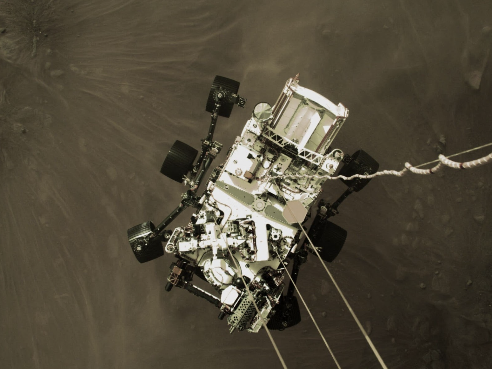

Crewed Mars mission
Mars. Red Rocks! An even bigger step for humankind… and capitalism. SpaceX has put out the goal of landing humans on Mars in 2026. It is likely to achieve a crewed Mars mission before any nation state. NASA has their sites set on returning humans to the Moon, setting up a permanent base and infrastructure, and then advancing onward after 2028. If SpaceX is successful in putting the first footprints on Mars, it will be a testament to both the entrepreneurial spirit and the tremendous success of public-private partnership when there is alignment. NASA took a risk with the 50-50 cost share funding structure, and that bet became an inflection point for the entire aerospace industry.
Observant readers will note the date on our tech map is several years past Elon Musk’s prediction. Like any great founder, he’s optimistic on schedule and pushing hard. There will be unknown unknowns that push back. Hence the management reserve buffer on this prediction!
Mars has ~38 percent of the gravity of Earth (for reference the moon has 1/62). The larger gravity well means it’s not advisable to land with the amount of propellant you’d need to reach escape velocity. A crewed mission to Mars will require in situ resource utilization (ISRU). Direct-capture technologies can be used to pull CO2 from the Martian atmosphere, an abundant resource at 95 percent by volume. The CO2 can be electrozyed into breathable oxygen and propellant oxidizer (not only for crews’ return to Earth, but surface transport and nighttime power). Oxygen generation from Martian CO2 has already been demonstrated on MOXIE in 2021. The CO2 with Martian water can be turned into methane fuel (e.g. to power SpaceX’s Raptor engines).
A crewed mission to Mars will also require robust shielding during transit, to minimize the risk of cellular damage from ionizing radiation. Heavy hulls are expensive to launch, so we may see hulls manufactured from lunar resources or even near-Earth asteroid mines. Initial missions might employ water-filled hulls. Water contains more nuclei per volume than a metal and the nuclei is what blocks cosmic rays. The water can also be used by the crew after landing on the surface while other water sources are mined.
NASA’s Mars 2020 Perseverance rover landing on Mars, carrying the Mars Oxygen ISRU Experiment (MOXIE). Credit: NASA